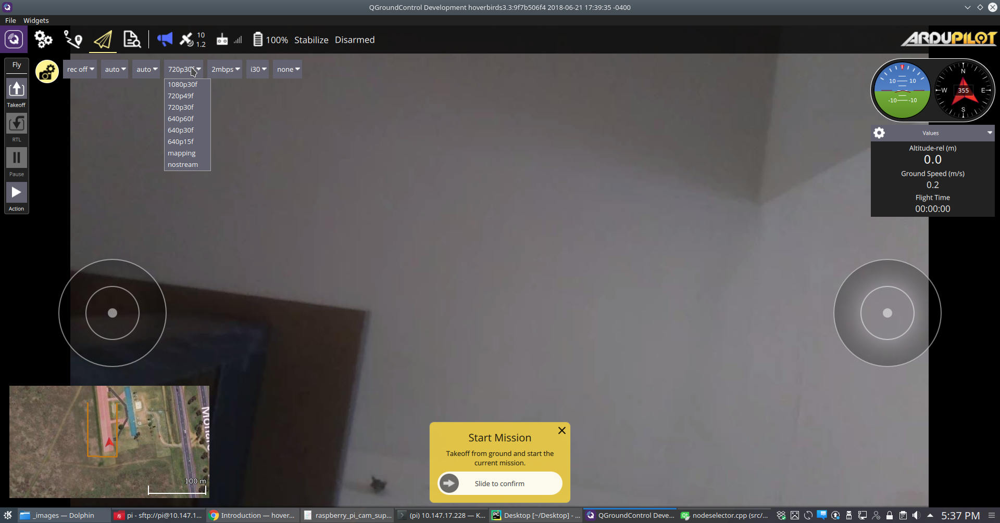
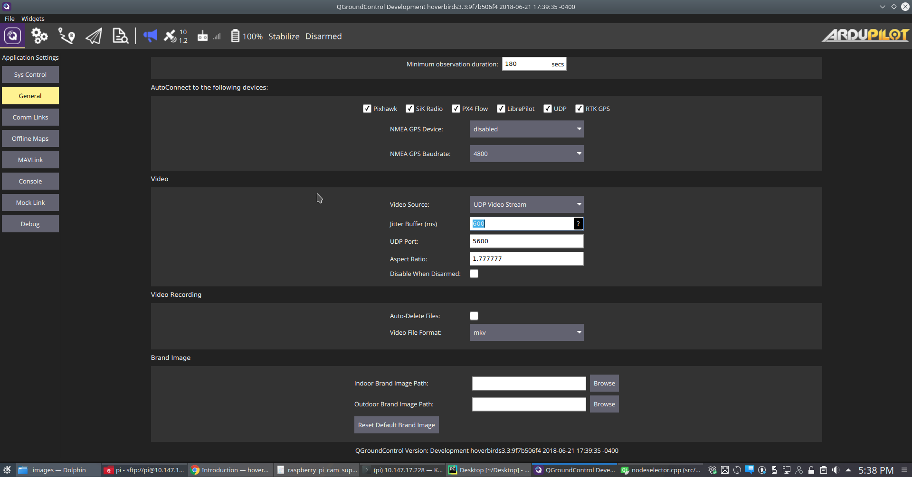
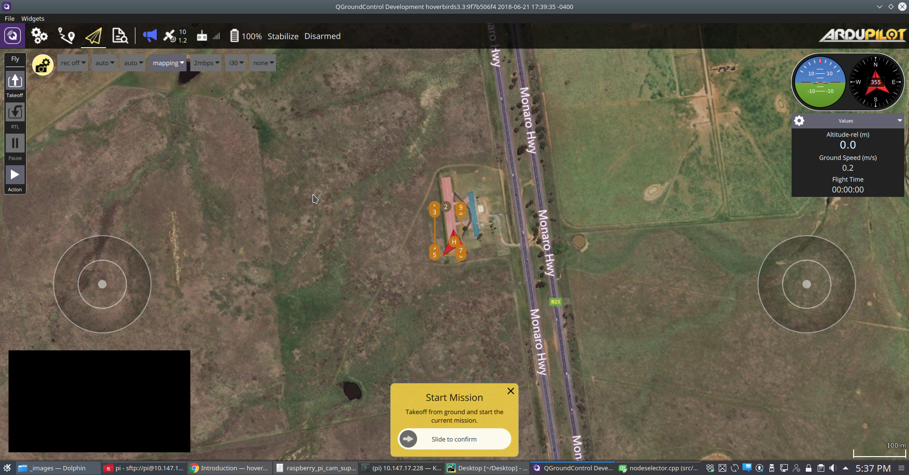
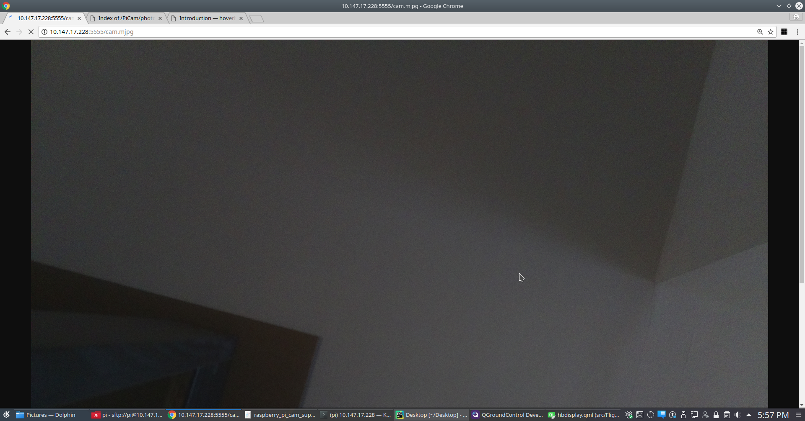
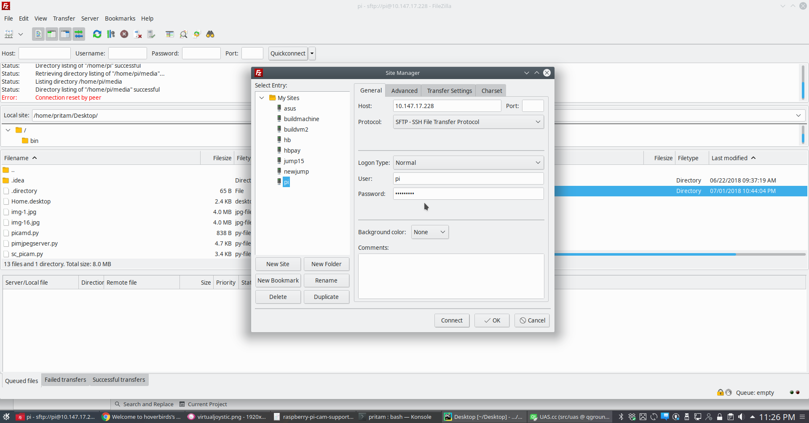
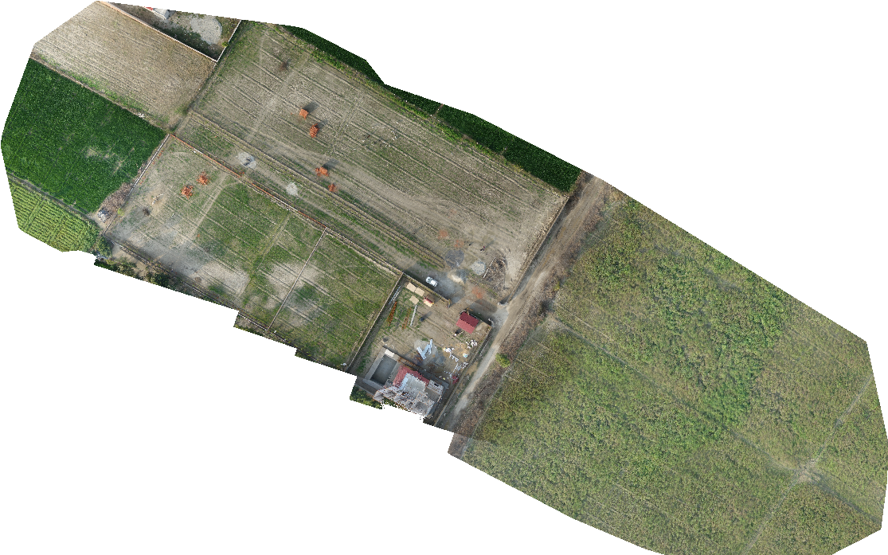
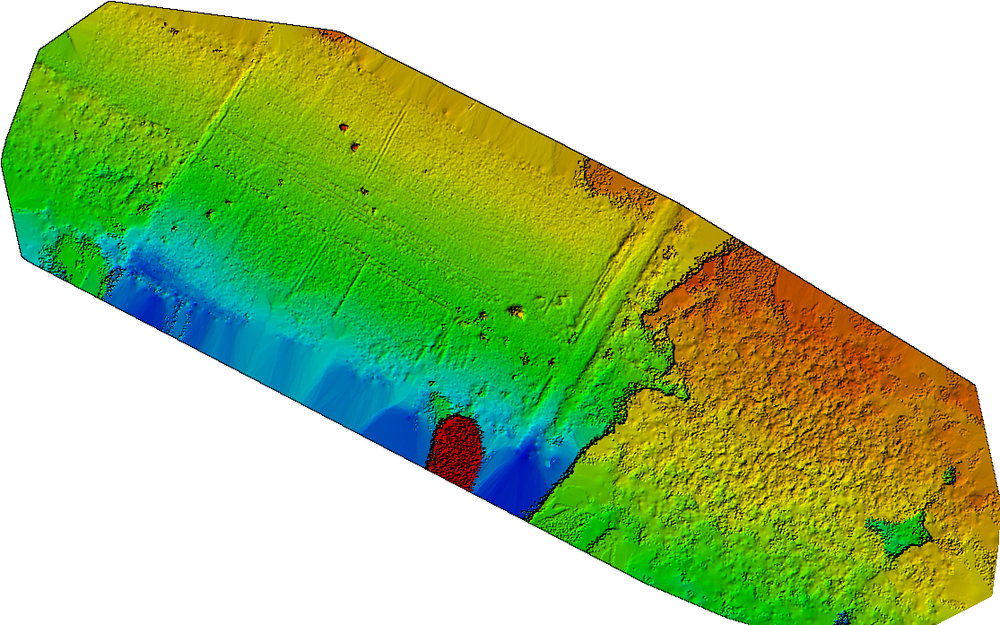
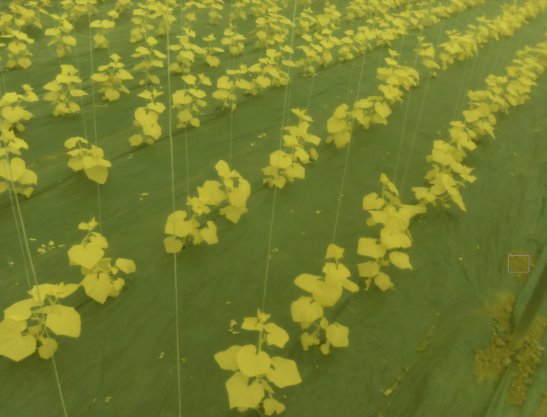

Raspberry Pi Camera Support¶
Support has been added in QGC as well as Raspberry Pi side to support almost all capabilities of Pi camera so that students don’t have much issue playing with it. Both Cameras versions v1 and v2 are supported. Generally students like to use V1 as it is available cheaper. Both versions are also available in NDVI version from our store. The NDVI version is hacked NOIR sensor with an infra blue filter attached.
So what all can we do with the onboard Pi camera. The support is in two parts.
Video streaming support.
Mapping/Survey support.
Video Streaming Support¶
All options supported by raspvid camera video utility are supported. In fact the same utility along with gst is used to setup the pipeline on the raspberry pi side. QGC send the full pipeline as a command over http so it is very easy to incorporate new pipelines in QGC, you just have to modify them here. The options provided in the UI also allow you to toggle on board recording.
{kind=link}
Apart from these you have some options in general settings. These are common with QGC. But in our version of QGC, there is one extra option for jitter buffer. If you are on a high latency network, you should consider increasing this number. e.g. For local Wifi 20ms is good enough. For a VPN running across continents you might have to go as high as 800ms. That is why a setting is given to play around the number till you find the sweet spot that suits your setup best.
{kind=link}
Gimbal Support¶
Gimbal is supported thorugh two axis servo gimbal with adapter plates as shown below.

Mapping/Survey support¶
One can select mapping mode from the camera options as shown in below figure. A separate mode has to be selected because PiCam can’t support both full resolution still images and video output at the same time. Once you have selected mapping mode you can define a survey mission and be assured that the geotagged images will be captured and stored on board storage.
{kind=link}
The Survey and imaging support is provided through a python script that also exports an mjpeg server. The script itself uses PiCamera python module for capturing images.
You can also point any webbrowser browser to http://10.0.0.1:5555/cam.mjpg to receive full resolution stills. This is true as long as the camera is in mapping mode irrespective of the fact whether you are running a survey mission or not. This makes it a powerful tool to stream full resolution of the sensor rather than limiting yourself of max of 1080p which is just 2MP. In fact all vehicles designed for surveillance should support mjpeg to transmit full resolution images. Full resolution can make a lot of difference when you want to spot smallest of the things on the ground.
{kind=link}
The stream from mjpeg server is not displayed on the QGC screen as there were difficulties in providing zooming options and decent user experience. And most people might not want to have it running as it can be quite taxing on wifi bandwidth. Also someone looking for full resolution images will anyway want those to be displayed on a bigger dedicated screen.
Downloading media from Raspberry Pi¶
Now that you have either videos or photographs recorded on raspberry Pi. Let’s see how to download them. You can use two methods to access it. If you just want to quickly look up something, you can point your browser to http://10.0.0.1/media/ and you will see all the media that is there on the Pi. But a better method to actually download that media in bulk is to use some sftp client like filezilla. Add a new site configuration like the one shown in the image below.
Now you can just drag and drop things from remote side to your local machine side.
{kind=link}
Post Processing Images¶
Webodm is an excellent opensource project that is easy to use as well. It provides a simple web interface and using opendronemap behind the scene to give you complete ortho images and point cloud. If you want to go deeper, it is in python and you can modify it to your requirement.
A stitched image looks like this. Of course this is much smaller version of it. The full resolution Orthomosaic will be difficult to render in a browser.
{kind=link}
You can also specify various kinds of filters to have a better video of things that you are interested in. here is a DSM view of the same ortho.
{kind=link}
You can also buy NDVI converted raspberry Pi camera from us for vegetation/crop health monitoring.
{kind=link}